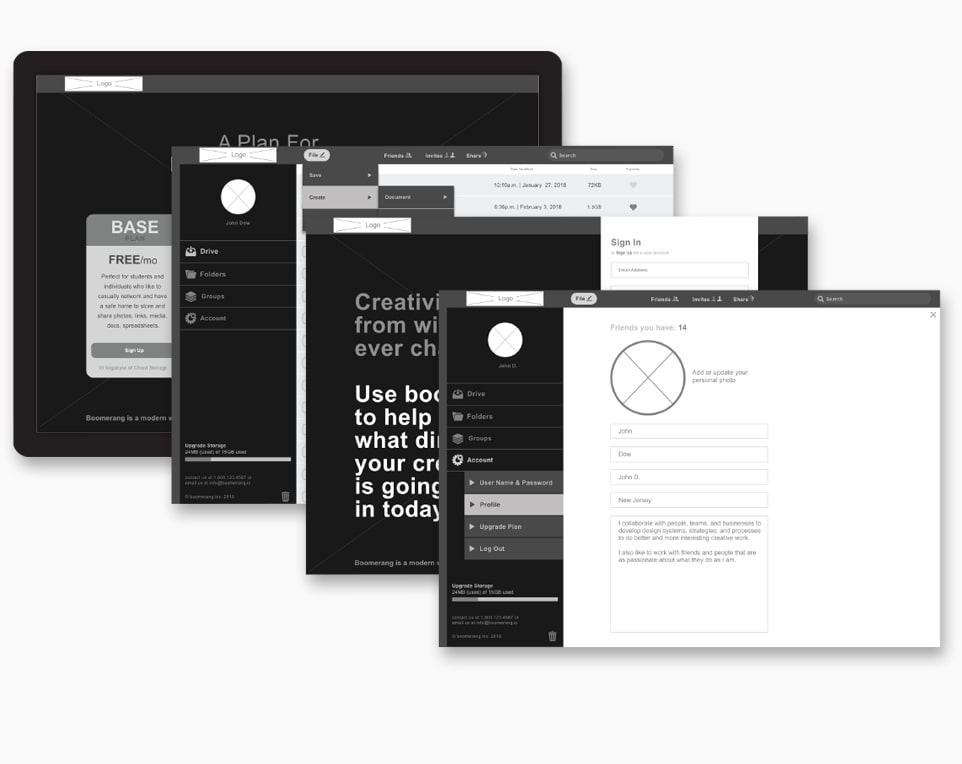

Boomerang is a Web & mobile cloud storage product focusing on either a free or paid subscription. Boomerang specializes in cloud storage with real time calibration and sharing features all in one.
Design Deliverables
UX Design
Visual Design
Brand & Identity
Design Deliverables
User Surveys
Personas
Competitive Analysis
Concept & Identity
User Stories & Flows
Paper Prototype
Wire-Frames
User Testing
Visual Design
Design Deliverables
Duration
About 4 weeks
Tools & Software
Adobe XD
Adobe Photoshop
Adobe Illustrator
What is Boomerang?
Boomerang is a sleek, modern, real time cloud storage app with calibration and sharing features all in one. It is perfect for anyone, anywhere with its fully
responsive interface. Boomerang has a plan that works for everyone, whether you are a student wanting to calibrate and share with friends or a demanding
business person looking to use a product that will boost productivity.
The Challenge
Was to create a cloud storage & organization app like Google Drive, Dropbox, Evernote, etc.
• The client requested me to created the name & the branding.
• The client was not sure if this should just be a desktop or mobile app.
Features Needed:
1. Saving Content (links, images, videos, etc.)
2. Organizing Content categories, tags, groups, and/or folders
3. Creating Content (notes, documents and spreadsheets)
4. Uploading Files (videos, images, PDFs, etc.) from computer or mobile device
5. Sharing items, folders with others (& vice-versa)
6. Collaboration with other users real-time in notes or documents.
Key points of differentiation with this app is collaboration. By leveraging the “network effect”, it should generate growth.
Was the creation of the Boomerang Cloud Storage App! Have all the functionality that was requested plus more!
Problems this product solves for its users:
1. The 6 points just mentioned.
2. Highly Customization: The ability to store or share folders with whom ever you want. Examples: jobs, projects, music, pictures, albums, videos etc. If it can be saved on a computer you can save it on the cloud.
3. Real-Time Collaboration & Sharing: A place to share and collaborate over projects almost immediately stored on the cloud with friends, coworkers even clients. This can help with your workflow or just networking with friends.
4. Accessibility: Be able to save or download files from desktop & mobile devices anywhere.
5. Scalability with price plans to fit anyone’s needs: That can be changed with a touch of your finger.
6. Disaster Recovery & Storage Immortality / back up drives.
• The client requested me to created the name & the branding.
• The client was not sure if this should just be a desktop or mobile app.
Features Needed:
1. Saving Content (links, images, videos, etc.)
2. Organizing Content categories, tags, groups, and/or folders
3. Creating Content (notes, documents and spreadsheets)
4. Uploading Files (videos, images, PDFs, etc.) from computer or mobile device
5. Sharing items, folders with others (& vice-versa)
6. Collaboration with other users real-time in notes or documents.
Key points of differentiation with this app is collaboration. By leveraging the “network effect”, it should generate growth.
The Solution
Was the creation of the Boomerang Cloud Storage App! Have all the functionality that was requested plus more!
Problems this product solves for its users:
1. The 6 points just mentioned.
2. Highly Customization: The ability to store or share folders with whom ever you want. Examples: jobs, projects, music, pictures, albums, videos etc. If it can be saved on a computer you can save it on the cloud.
3. Real-Time Collaboration & Sharing: A place to share and collaborate over projects almost immediately stored on the cloud with friends, coworkers even clients. This can help with your workflow or just networking with friends.
4. Accessibility: Be able to save or download files from desktop & mobile devices anywhere.
5. Scalability with price plans to fit anyone’s needs: That can be changed with a touch of your finger.
6. Disaster Recovery & Storage Immortality / back up drives.
Discovery & Research
To better understand the cloud storage app market I began researching the competitors. After identifying the features, prices and target audience I performed a SWOT Analysis and created User Flows on the competitor’s desktop apps. This information allowed me to see potential gaps in current services and untapped opportunities for a new product. I then performed a Survey with respondents that had experience using cloud storage apps. This helped not only to create an app that I thought the market could use but also helped me understand what type of cloud storage app many users felt would be useful to the market. This is where the opportunity was given to be able to see if my initial assumptions were right or wrong. Finally I created User Personas of two very different individuals to put a face and personality to the target consumer.
SWOT Analysis & User Flows of Dropbox
Positioning:
• Large consumer base
• Paid collaboration plans offered
• Most expensive cloud storage service
Primary Audience:
Small Businesses & Existing Consumer Base
Differentiators:
Dropbox has “NO real point of differentiation” over the competition.
• Large consumer base
• Paid collaboration plans offered
• Most expensive cloud storage service
Primary Audience:
Small Businesses & Existing Consumer Base
Differentiators:
Dropbox has “NO real point of differentiation” over the competition.
SWOT Analysis & User Flows of Evernote
Positioning:
• One of the best organization programs in the market today.
• Organization & Collaboration features mainly.
Primary Audience:
Small Businesses & people that embrace technology.
Differentiators:
• Niche Product in the cloud storage arena.
• Solid integration with Google Docs & PowerPoint at this point
• Offers a more robust organizational program & experience.
• One of the best organization programs in the market today.
• Organization & Collaboration features mainly.
Primary Audience:
Small Businesses & people that embrace technology.
Differentiators:
• Niche Product in the cloud storage arena.
• Solid integration with Google Docs & PowerPoint at this point
• Offers a more robust organizational program & experience.
SWOT Analysis & User Flows of Google
Positioning:
• A Robust Free & Paid cloud storage subscription plan.
• One of the largest household technology names out today.
Primary Audience:
• They have a Huge Audience Base.
• They seem to Appeal to the Masses with no target audience.
Differentiators:
• They have Something for Everyone.
• They are “Not the Most Secure Provider” available.
• A Robust Free & Paid cloud storage subscription plan.
• One of the largest household technology names out today.
Primary Audience:
• They have a Huge Audience Base.
• They seem to Appeal to the Masses with no target audience.
Differentiators:
• They have Something for Everyone.
• They are “Not the Most Secure Provider” available.
User Survey
I Surveyed 16 respondents with experience using storage apps.
• Over 50% of the respondents were “Millennials”
• What respondents primarily used cloud storage apps for?
• Likes & Frustrations with existing cloud storage apps.
• Would collaboration be an important feature on a cloud storage app?
The Survey helped me better to:
• Understand the users Wants, Needs & Expectations.
This was where I was able to learn, if my initial assumptions were right or wrong!
• Over 50% of the respondents were “Millennials”
• What respondents primarily used cloud storage apps for?
• Likes & Frustrations with existing cloud storage apps.
• Would collaboration be an important feature on a cloud storage app?
The Survey helped me better to:
• Understand the users Wants, Needs & Expectations.
This was where I was able to learn, if my initial assumptions were right or wrong!
User Personas
I created User Personas of two very different individuals.
#1 Younger consumer perhaps still in school.
• Using this app for collaborative, as a creative outlet or even to help them keep up with the technologies needed in Today’s Education System.
#2 Someone who is a bit older, that is a business professional.
• They would use this app as a tool in their trade to help them with Productivity, Collaboration, & Keeping Track of Projects.
#1 Younger consumer perhaps still in school.
• Using this app for collaborative, as a creative outlet or even to help them keep up with the technologies needed in Today’s Education System.
#2 Someone who is a bit older, that is a business professional.
• They would use this app as a tool in their trade to help them with Productivity, Collaboration, & Keeping Track of Projects.
Information Architecture
Using the findings from the user research, as well as specific comments made by potential users a list was compiled for new and returning users comprised of 45 tasks called User Stories. I now had a specific list of potential tasks to include in our app. With an MVP in mind, I focused on high priority tasks first; then created rough sketch versions of User Flows. By referencing User Flows created from the Competitive Analysis I was able to see how competitors mapped out tasks similar to those I wanted in this app. Time was then spent on designing Wireframes with pen and paper to create quick options for the sights logic, visual consistency and navigation. This helped to ensure the site stayed simple and clean for the end user and I was then able to create the first clickable prototype for my Usability Tests. Three different users were tested where they were given three to four tasks in which they provided invaluable feedback for how the product could be optimized even more user friendly.
User Stories
Were created for a cloud storage & organization app like Google Drive, Dropbox, Evernote, etc
Features Needed:
1. Saving Content (links, images, videos, etc.)
2. Organizing Content categories, tags, groups, and/or folders.
3. Creating Content (notes, documents, and spreadsheets)
4. Uploading (videos, images, PDFs, etc.) from any device.
5. Sharing items & folders with others (& vice-versa)
6. Collaboration with others in real-time thrue notes or documents.
Key point of differentiation with this app is collaboration.
Features Needed:
1. Saving Content (links, images, videos, etc.)
2. Organizing Content categories, tags, groups, and/or folders.
3. Creating Content (notes, documents, and spreadsheets)
4. Uploading (videos, images, PDFs, etc.) from any device.
5. Sharing items & folders with others (& vice-versa)
6. Collaboration with others in real-time thrue notes or documents.
Key point of differentiation with this app is collaboration.
User Flows
Using my User Stories, I now had specific lists of potential tasks to include in the MVP.
• Sketch rough versions of User Flows.
• I focused on high priority tasks first.
• I referenced to User Flows to see how competitors mapped out tasks similar to those I wanted.
• The Flows did not different from product to product much.
Flows to focus on:
• Collaboration & Onboarding
• Moving, Uploading, & Sharing Files
• Sketch rough versions of User Flows.
• I focused on high priority tasks first.
• I referenced to User Flows to see how competitors mapped out tasks similar to those I wanted.
• The Flows did not different from product to product much.
Flows to focus on:
• Collaboration & Onboarding
• Moving, Uploading, & Sharing Files
Wireframes - Sketches & Digital
#1st Sketches for quick options - layout, consistency, & navigating.
To ensure the site stays clear for the user without taking all the time on the computer.
#2 digital Wireframes using Adobe XD.
Dropbox was an inspired for Boomerang’s look, it just needed to feel a little more professional.
To ensure the site stays clear for the user without taking all the time on the computer.
#2 digital Wireframes using Adobe XD.
Dropbox was an inspired for Boomerang’s look, it just needed to feel a little more professional.
Responsive Design
Boomerang was created using a Responsive Grid System.
I only used Scalable Vector Graphics (SVG) except for the larger background images.
The app was developed to have high definition graphic standards to accommodate retina screens.
From my Survey findings I knew I needed a Responsive layout!
I only used Scalable Vector Graphics (SVG) except for the larger background images.
The app was developed to have high definition graphic standards to accommodate retina screens.
From my Survey findings I knew I needed a Responsive layout!
First Clickable Prototype & Usability Test
I used Adobe XD to create this prototype using the digital wireframes created previously.
More functionality & screens were crerated than necessary for the MVP, to help ensure consistency across different platforms.
Usability Tests:
Were performed on 3 different users with 4 tasks each. They provided invaluable feedback for how to improve UI's flow.
For example:
A user struggling to locate the edit button in order to complete the task. The user stated they were used to seeing a plus sign on some popular apps to create documents. After doing some research I realized the user was correct.
More functionality & screens were crerated than necessary for the MVP, to help ensure consistency across different platforms.
Usability Tests:
Were performed on 3 different users with 4 tasks each. They provided invaluable feedback for how to improve UI's flow.
For example:
A user struggling to locate the edit button in order to complete the task. The user stated they were used to seeing a plus sign on some popular apps to create documents. After doing some research I realized the user was correct.
Branding & Identity
Research was conducted again to analyze the competitor’s brands. This time I focused on the competitors in the cloud storage market and other applications making an impact in the market. After creating several potentially viable names, I chose Boomerang because I felt it resonated the best with our target audience. The boomerang is known for being thrown and returning back to the user, the cloud storage app does a similar function and this is why the name Boomerang was chosen; along with being a lighthearted and memorable name as well. I then created sketches of logo concepts attempting to capture a high quality looking logo that evoked a confidant, youthful and a lighthearted feeling. This was all done while not losing focus on the social collaboration aspect of the app and the specified target consumer “Millennials”. It was now time to create the style guide and mood board to help set the tone and style of the end product.
Competitive Analysis & Naming
Research was preformed on competitor’s brands in the market.
I examined how each brand used:
• Styles / Characteristics - most appeared “Simple & Flat”
• Colors - most used “Light & Cool Colors”
• Imagery - most used “Simple & Flat Shapes”
• Typography - Most used “San Serif Fonts”
I chose the name Boomerang because I felt it would resonate the best with our target audience.
• Lighthearted
• Memorable
I examined how each brand used:
• Styles / Characteristics - most appeared “Simple & Flat”
• Colors - most used “Light & Cool Colors”
• Imagery - most used “Simple & Flat Shapes”
• Typography - Most used “San Serif Fonts”
I chose the name Boomerang because I felt it would resonate the best with our target audience.
• Lighthearted
• Memorable

Logo Development
I started out by creating (B/W - Gray Scale sketches) for concepts while not losing focus on:
Feelings to Evoke:
• High Quality
• Youthful
• Lighthearted
• Technology
• Millennials
How to Evoke:
• Fonts
• Color choices
Feelings to Evoke:
• High Quality
• Youthful
• Lighthearted
• Technology
• Millennials
How to Evoke:
• Fonts
• Color choices
Style Guide
The style guide was created to help ensure consistence through the applications thru:
• Colors
• Styles
• Typography
• Similar Feeling Shape (Rounded)
It is also needed for when I hand off the prototype off to the developer.
• Colors
• Styles
• Typography
• Similar Feeling Shape (Rounded)
It is also needed for when I hand off the prototype off to the developer.
Mood Board
This visually showed what the target audience “Millennials” were receptive & conditioned to seeing.
I compiled a mood board of select:
• Imagery
• Typography
• Photography
• Colors & Styles
This help me capture the feeling I want to convey with the Boomerang brand.
Visual Design
I was now finally able to see how all the pieces were going to come together by starting to create the high fidelity mockups for both the desktop and mobile versions. I started by applying style guide requirements and looking at each page as a whole; as well as source high quality images and other resources the style guide did not provide to help create the best user interface and experience possible. There were still decisions to make on the overall user interface that would need to be brought to the preference testing to help get clarity. I conducted three separate preference tests to get user feedback on different design elements. The tested design elements were then edited on the mockup to reflect the users’ most popular choices. Then another user test was performed on both platforms with the same previous users. Feedback was positive; all users felt like it was a much better experience.
Hi Fidelity Mockup 1
• Adobe XD
• I am finally able to see how all the pieces come together.
• Apply style guide requirements
• Looking at each page as a whole
• High quality images were found as well as other resources.
• I am finally able to see how all the pieces come together.
• Apply style guide requirements
• Looking at each page as a whole
• High quality images were found as well as other resources.

Preference Test - Button Location
Feedback showed that there were decisions to make on the overall user interface.
• This was a valuable experience for me to learn.
• User Centric Design is about creating something easy to use not prettiest or most creative.
• This was a valuable experience for me to learn.
• User Centric Design is about creating something easy to use not prettiest or most creative.
Preference Test - Side Bar Color
Feedback showed that there were decisions to make on the overall user interface.
• This was a valuable experience for me to learn.
• User Centric Design is about creating something easy to use not prettiest or most creative.
• This was a valuable experience for me to learn.
• User Centric Design is about creating something easy to use not prettiest or most creative.
Preference Tests - Photo & Name Placement
Feedback showed that there were decisions to make on the overall user interface.
• This was a valuable experience for me to learn.
• User Centric Design is about creating something easy to use not prettiest or most creative.
• This was a valuable experience for me to learn.
• User Centric Design is about creating something easy to use not prettiest or most creative.
Preference Test - Mobile UI
Feedback showed that there were decisions to make on the overall user interface.
• This was a valuable experience for me to learn.
• User Centric Design is about creating something easy to use not prettiest or most creative.
• This was a valuable experience for me to learn.
• User Centric Design is about creating something easy to use not prettiest or most creative.
Hi Fidelity Mockup 2
Preference Test findings were applied to the mobile and desktop.
Show Desktop:
• Onboarding / Sign-Up Process: Sign-Up > Paid Plan
• Create Document: + > Document > Save
Show Mobile:
• Onboarding / Sign-Up Process: Sign-Up > Paid Plan
• Create Document: + > Document > Save
Feedback was positive, Same previous users felt like it was a much better experience.
Show Desktop:
• Onboarding / Sign-Up Process: Sign-Up > Paid Plan
• Create Document: + > Document > Save
Show Mobile:
• Onboarding / Sign-Up Process: Sign-Up > Paid Plan
• Create Document: + > Document > Save
Feedback was positive, Same previous users felt like it was a much better experience.
Findings & User Testing Results
• The User Surveys proved to be extremely beneficial for the development of this app.
• Competitors User Flows were extremely helpful on what screens and modal windows should be create.
• Perhaps the greatest learning for me was watching a users struggle with requested task during the usability test that I thought were simple.
• I empathized with the user and wanted to solve the problem for them.
After some research I made the changes. To my surprise all the users preferred it to the original one.
• Competitors User Flows were extremely helpful on what screens and modal windows should be create.
• Perhaps the greatest learning for me was watching a users struggle with requested task during the usability test that I thought were simple.
• I empathized with the user and wanted to solve the problem for them.
After some research I made the changes. To my surprise all the users preferred it to the original one.